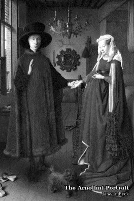
阿諾菲尼夫婦像
The Arnolfini Portrait
牆上的小圓鏡裡映出房間另一頭的兩個人，其中一個可能就是畫家。
The small convex mirror reflects two more people across the room, perhaps the painter himself.
挑選的標準只有一條：在四階灰、沒有背光的小螢幕上，這張畫還是不是那張畫。
這跟有不有名是兩回事。莫內的《印象・日出》靠橘色的太陽對上藍灰的霧撐著，兩者亮度幾乎一樣，轉成灰階就只剩一片灰，所以換成了北齋的《凱風快晴》。秀拉的點描和雷諾瓦的斑斕光點也沒撐過去，換成了沙金的《X 夫人》和卡耶博特的《巴黎街道：雨天》。
另一半的工夫花在確認拿到的是畫本身。同一幅名作在 Wikimedia Commons 上常有好幾個檔案，其中一份下載核對之後，是遊客在展場對著畫拍的照片。
原作最大的是《最後的晚餐》，將近九公尺寬；最小的是杜勒的《憂鬱 I》，比一張 A4 紙還小。現在它們都在同一塊螢幕上。
每一幅都從原圖重新計算，照 X3 和 X4 各自的螢幕做成四階灰，放進去就是一個像素對一個像素。橫式的畫在機器上是轉 90 度存的，這裡轉正給你看。
One rule decided the collection: on a small four-gray screen without a backlight, is this still the same painting? Fame had nothing to do with it. Monet's Impression, Sunrise depends on an orange sun against a blue-gray haze of nearly the same brightness, so it turns into flat gray and was replaced by Hokusai's Red Fuji. The largest original, The Last Supper, is almost nine meters wide; the smallest, Dürer's Melencolia I, is smaller than a sheet of A4 paper. Now they share one screen. Every painting is computed from the original image for the X3 and X4 screens separately, pixel for pixel.
Renaissance 1434–1565 9 幅

The Arnolfini Portrait
牆上的小圓鏡裡映出房間另一頭的兩個人，其中一個可能就是畫家。
The small convex mirror reflects two more people across the room, perhaps the painter himself.
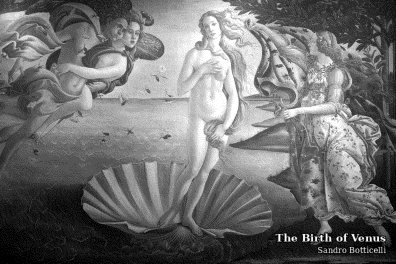
The Birth of Venus
西風把剛從海中誕生的維納斯吹向岸邊，季節女神張開斗篷等著她。
The west wind blows the newborn Venus ashore while a goddess of the seasons waits with a cloak.
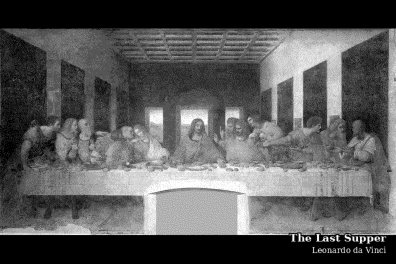
The Last Supper
「你們中間有一個人要出賣我」話一出口，十二門徒三人一組騷動起來。
The moment after “One of you will betray me”: the twelve apostles stir in groups of three.
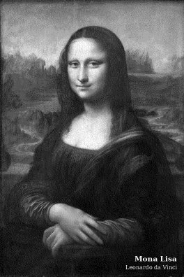
Mona Lisa
沒有清楚輪廓的微笑，是達文西用一層又一層的暈塗堆出來的。
A smile without a hard outline, built up by Leonardo in layer after layer of sfumato.
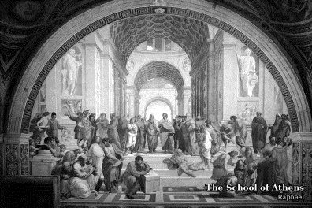
The School of Athens
柏拉圖指著天，亞里斯多德掌心朝地，古希臘的哲學家齊聚一堂。
Plato points up, Aristotle gestures to the earth, and the philosophers of ancient Greece gather around them.
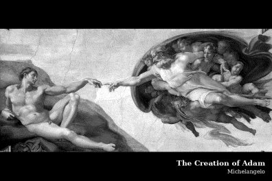
The Creation of Adam
上帝與亞當的手指差一點就要碰到，那一點空隙是整幅畫的中心。
God's finger and Adam's almost touch; the gap between them is the center of the painting.
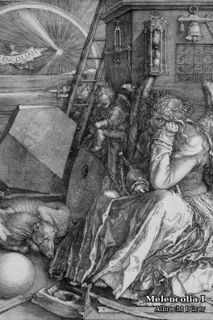
Melencolia I
有翅膀的人物托著臉出神，身邊散著工具、多面體和一個魔方陣。
A winged figure sits lost in thought among tools, a polyhedron and a magic square.
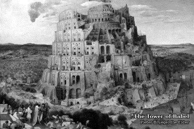
The Tower of Babel
一座蓋進雲裡的塔，細看才發現上面爬滿了工人和起重機。
A tower rising into the clouds — look closely and it is crawling with workers and cranes.
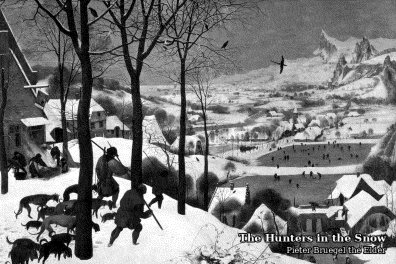
The Hunters in the Snow
獵人帶著獵犬走下雪坡，山谷裡的人在結冰的池塘上溜冰。
Hunters and their dogs come down a snowy slope while villagers skate on frozen ponds below.
Baroque 1599–1665 5 幅
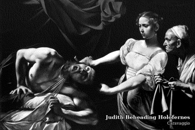
Judith Beheading Holofernes
卡拉瓦喬最拿手的強烈明暗，讓這一刻像舞台上只打了一盞燈。
Caravaggio's fierce light and shadow make the moment look lit by a single stage spotlight.
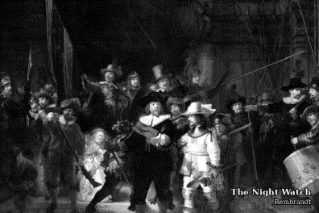
The Night Watch
民兵隊出發的一刻，光打在隊長和副官身上，其他人退進陰影。
A militia company sets off; the light falls on the captain and his lieutenant, and the rest step back into shadow.
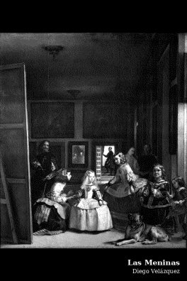
Las Meninas
畫家本人站在畫布前望向我們，後牆鏡子裡映出的是國王與王后。
The painter looks out at us from behind his canvas; the mirror on the back wall reflects the king and queen.
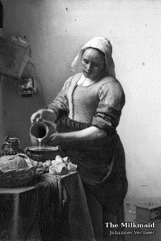
The Milkmaid
安靜的室內，牛奶細細流下的那一刻被留了下來。
A quiet interior, held at the moment the milk pours.
Girl with a Pearl Earring
沒有人知道她是誰。她回頭的那一瞬間，珍珠上只有兩筆亮光。
No one knows who she is. The pearl is little more than two strokes of light.
Ukiyo-e 1794–1857 7 幅
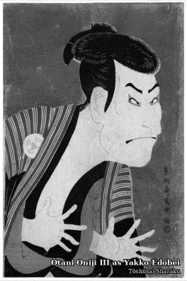
Ōtani Oniji III as Yakko Edobei
歌舞伎演員瞪眼張手的定格。寫樂只活躍約十個月，留下百餘幅版畫後，就不再見於任何可靠的記錄。
A kabuki actor frozen mid-pose. Sharaku was active for only about ten months and left more than a hundred prints; after that, he disappears from the record.
The Great Wave off Kanagawa
浪頭像爪子一樣撲向三艘小船，遠方的富士山反而像最小的一座浪。
The wave's claws reach for three boats, and distant Mount Fuji looks like the smallest wave of all.
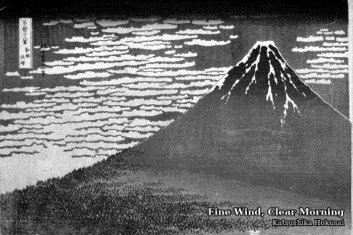
Fine Wind, Clear Morning
又叫「赤富士」：晨光把山染紅，整座山只用幾塊色面就立了起來。
Also called Red Fuji: morning light turns the mountain red, built from just a few planes of color.
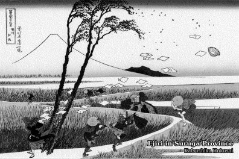
Ejiri in Suruga Province
一陣強風把旅人的紙張吹上天，只有富士山動也不動。
A gust sends travellers' papers flying; only Mount Fuji stays still.
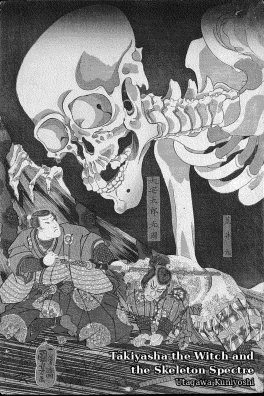
Takiyasha the Witch and the Skeleton Spectre
妖術召來的巨大骷髏，從破敗的宮殿裡探出身子。
A giant skeleton summoned by sorcery leans out of a ruined palace.
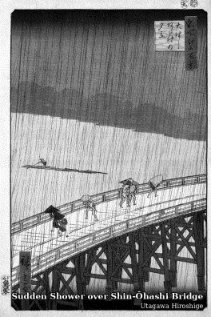
Sudden Shower over Shin-Ōhashi Bridge
驟雨刻成一根根細線，橋上的人縮著身子趕路。梵谷臨摹過這一張。
The downpour is carved as fine lines while people hurry across the bridge. Van Gogh once painted a copy of it.
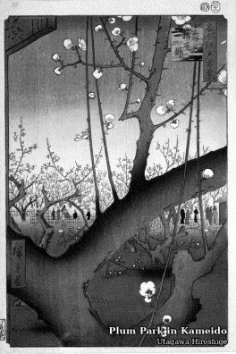
Plum Park in Kameido
前景的梅枝大得出奇，把整座庭園推到後面。梵谷也臨摹過這一張。
An oversized plum branch in the foreground pushes the garden into the distance. Van Gogh copied this one too.
The nineteenth century 1814–1883 12 幅
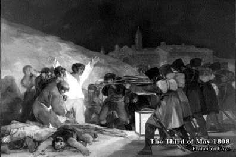
The Third of May 1808
行刑隊背對著我們，所有的光都落在那個張開雙臂的人身上。
The firing squad turns its back to us, and all the light falls on the man with his arms flung open.
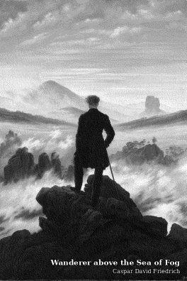
Wanderer above the Sea of Fog
背對我們的旅人站在岩頂，腳下是一整片翻湧的霧海。
A traveller stands on a rocky summit with his back to us, above a sea of fog.
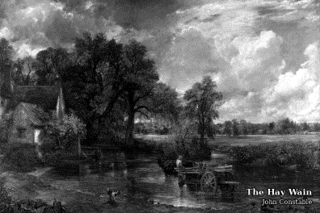
The Hay Wain
一輛乾草車涉水過河，英國鄉間夏日的正午就停在這一刻。
A hay wain fords a river at midday in the English countryside.
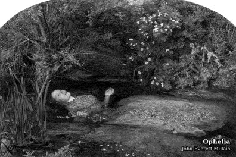
Ophelia
《哈姆雷特》裡的奧菲莉亞漂在溪水上，四周的花草一株株都畫得清清楚楚。
Hamlet's Ophelia floats down a stream, every plant around her painted in precise detail.
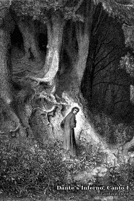
Dante's Inferno, Canto I
「在人生旅程的中途，我在一座幽暗的森林裡迷了路。」神曲從這裡開始。
“Midway upon the journey of our life I found myself within a forest dark” — where the Divine Comedy begins.
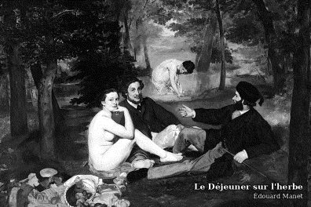
Le Déjeuner sur l'herbe
兩位衣著整齊的紳士和一位裸身的女子野餐，當年在巴黎引起軒然大波。
Two dressed gentlemen picnic with a nude woman — a scandal in the Paris of its day.
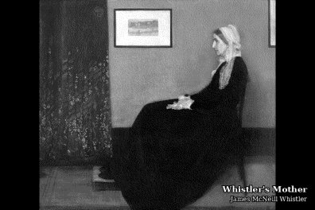
Whistler's Mother
原名《灰與黑的編排一號》：畫家的母親靜靜側坐，畫面幾乎只有灰與黑。
Its real title is Arrangement in Grey and Black No. 1: the painter's mother, seated in profile.
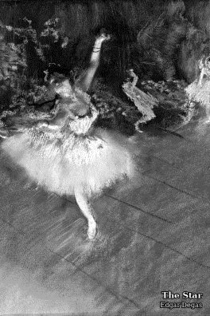
The Star
從高處俯看舞台中央伸展的舞者，側幕旁露出一個黑衣人的身影。
Seen from a high viewpoint, a dancer extends across the stage while a dark-clad figure stands in the wings.
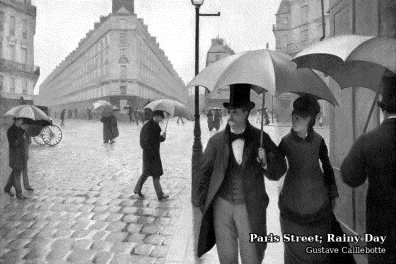
Paris Street; Rainy Day
雨中的巴黎街口，傘下的人們擦身而過，路面的石磚還在發亮。
A rainy Paris intersection: people pass under umbrellas and the paving stones still shine.
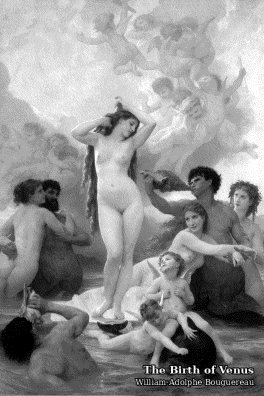
The Birth of Venus
同一個題材晚了將近四百年，布格羅把維納斯畫得像大理石一樣光滑。
The same subject nearly four hundred years later; Bouguereau paints Venus as smooth as marble.
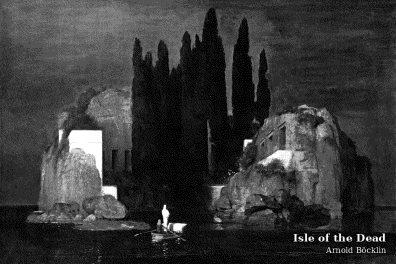
Isle of the Dead
一艘小船載著白衣人駛向岩島，島上高聳的柏樹一片漆黑。
A small boat carries a white-robed figure toward a rocky island dark with cypresses.
Madame X
黑色禮服、蒼白的肩膀，這幅肖像在 1884 年的巴黎沙龍引起一片譁然。
A black gown and pale shoulders — the portrait caused a scandal at the 1884 Paris Salon.
Fin de siècle 1888–1899 12 幅
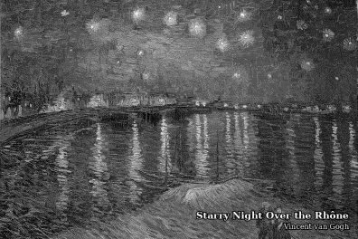
Starry Night Over the Rhône
亞爾的隆河岸邊，煤氣燈的倒影在水面上拉成一道道光。
On the Rhône at Arles, the gaslights stretch into streaks of light across the water.
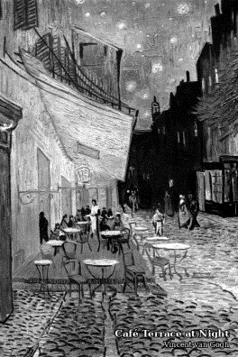
Café Terrace at Night
梵谷第一次用星空當背景。他在信裡說，這是一幅沒有用黑色的夜景。
Van Gogh's first painting with a starry sky; in a letter he called it a night painting without black.
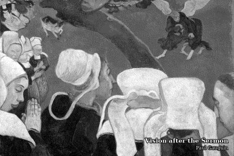
Vision after the Sermon
布列塔尼的婦人聽完佈道，眼前浮現雅各與天使摔角的景象。
Breton women, fresh from a sermon, see Jacob wrestling the angel.
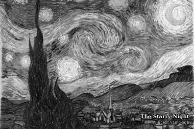
The Starry Night
梵谷以聖雷米療養院窗外的景色為本，把夜空畫成翻騰的漩渦。
Drawing on the view from his window at the Saint-Rémy asylum, van Gogh turned the night sky into swirling currents.
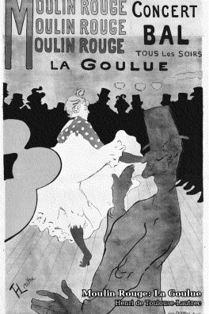
Moulin Rouge: La Goulue
紅磨坊的海報：拉古留在舞池中央起舞，觀眾成了後方一排黑色剪影，前景是瓦倫丁的側影。
A Moulin Rouge poster: La Goulue dances at the center, the crowd behind her reduced to black silhouettes, with Valentin in profile in the foreground.
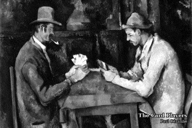
The Card Players
兩個普羅旺斯鄉間的男人面對面打牌，誰都不說話，眼睛只盯著手上的牌。
Two men from rural Provence play cards face to face in silence, eyes fixed on their hands.
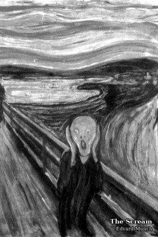
The Scream
橋上的人抱著頭，天空和峽灣一起扭曲成波浪。
A figure on a bridge clutches its head as the sky and fjord twist into waves.
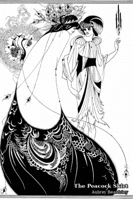
The Peacock Skirt
為王爾德《莎樂美》畫的插圖，只用黑與白就畫出孔雀羽毛的華麗。
An illustration for Wilde's Salome, rendering peacock splendor in nothing but black and white.
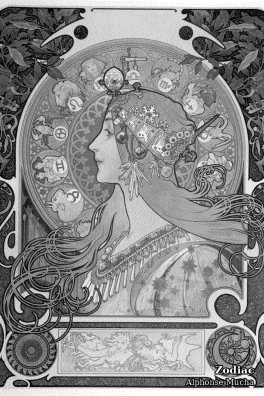
Zodiac
慕夏的招牌：女子的側臉、飄動的髮絲，和環繞著她的十二星座。
Mucha's signature: a woman in profile, flowing hair, and the twelve signs of the zodiac around her.
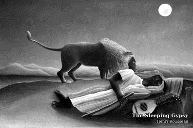
The Sleeping Gypsy
月光下，一頭獅子嗅著熟睡的旅人，沙漠安靜得不可思議。
In the moonlight, a lion sniffs a sleeping traveller in an impossibly quiet desert.
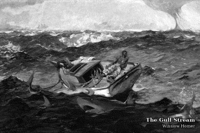
The Gulf Stream
斷了桅杆的小船、四周的鯊魚、遠方的水龍捲，船上的人卻一臉平靜。
A dismasted boat, circling sharks, a distant waterspout — and a sailor who looks strangely calm.
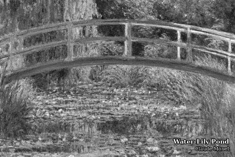
Water-Lily Pond
莫內在自家花園搭的日本橋。橋下的睡蓮，他畫了將近三十年。
The Japanese bridge in Monet's own garden. He painted the water lilies below it for nearly thirty years.
The twentieth century 1907–1930 5 幅
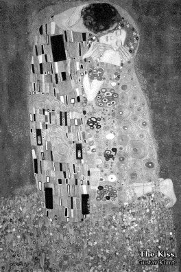
The Kiss
金色的紋樣包住相擁的兩人，只露出臉、手，和女子的腳。
Golden patterns wrap an embracing couple, leaving only their faces, hands and the woman's feet.
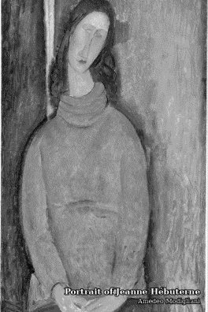
Portrait of Jeanne Hébuterne
拉長的臉、細長的脖子，這是莫迪利亞尼畫給伴侶珍妮的肖像。
An elongated face and slender neck — Modigliani's portrait of his partner, Jeanne.
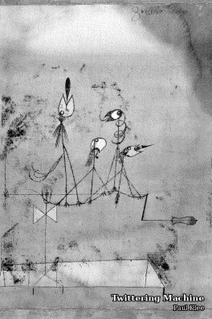
Twittering Machine
四隻怪鳥站在一根曲柄上，好像一轉就會開始唱歌。
Four strange birds perch on a crank, as if a turn of the handle would set them singing.
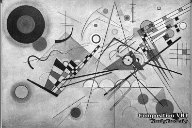
Composition VIII
康丁斯基把繪畫當成音樂：圓、三角和線條各自發出聲音。
Kandinsky treated painting like music: circles, triangles and lines each sound their own note.
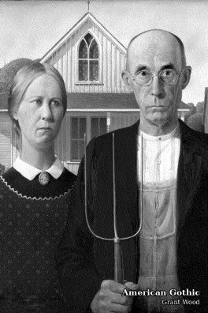
American Gothic
農夫和女兒站在有哥德式尖窗的房子前，手上的乾草叉跟窗框一樣尖。
A farmer and his daughter stand before a house with a Gothic window, his pitchfork as pointed as its frame.